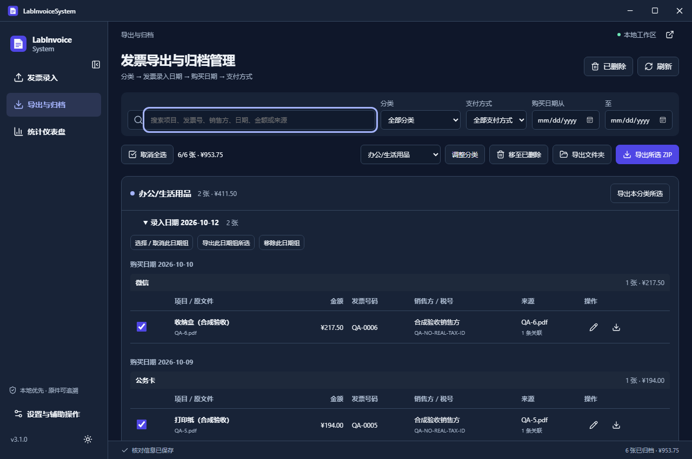
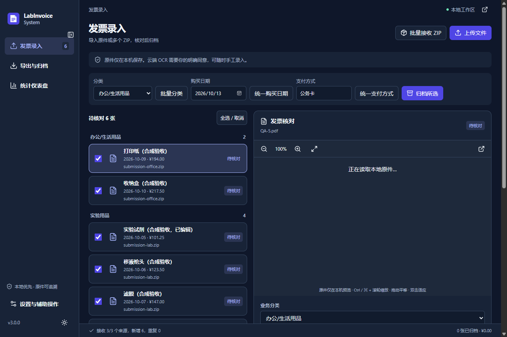
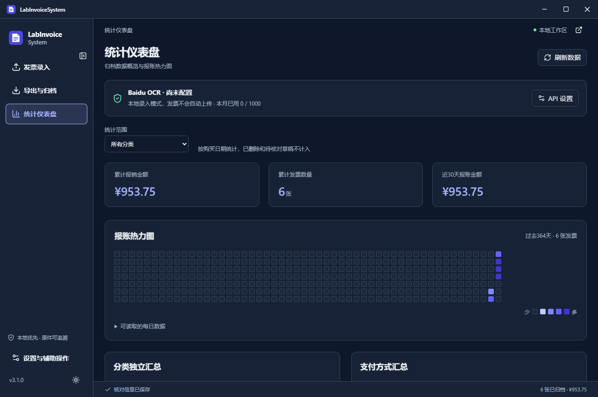

个人整理与提交
- 导入发票 PDF、JPG 或 PNG，或拖入 ZIP。
- 选择分类，核对日期、金额、项目和支付方式。可在首次导入时授权自动 OCR，也可继续手工录入。
- 确认已核对原件后归档；在导出与归档中选中记录，导出 ZIP。
- 把完整 ZIP 交给报账人员，保留本地原件与归档。
面向实验室的本地发票工作台。
整理原件、逐张核对，再把分类清楚的 ZIP
交给报账人员统一接收与汇总。
正在读取已发布的安装包… · GitHub Releases
macOS 当前为未公证预览构建，正式分发与在线更新等待 Apple 发行凭据。查看安装与签名状态

导入 PDF、图片，
核对字段与原件
原始发票、Excel
与版本化 Manifest
同时拖入多个 ZIP，
独立解析、检查重复
办公/生活用品
与实验用品独立整理
核对后统一归档，
分类统计并再次导出
本地优先。原件可追溯，云端 OCR 由你明确授权。
保留录入、导出归档和统计的导航习惯，
让多人提交的资料也能在同一个本地工作区整理。
本地 PDF 分页、缩放与图片预览。导入后自动 OCR 默认开启，可在设置中关闭。首次明确授权后识别新原件，完整元数据优先保留；识别结果仍需人工确认。缺失或不确定的字段会留给你核对。

新版 Manifest 记录原件映射、分类、日期、金额、发票身份与 SHA-256。旧版八字段 Excel ZIP 与普通发票 ZIP 也可接收；模糊匹配交给人工处理。
接收队列提供进度、错误明细、取消、重试和批次撤销。跨包、跨批次和已有归档检查重复，保留来源压缩包与内部文件的关联。
办公/生活用品与实验用品分别汇总，再按录入日期、购买日期和支付方式组织归档。搜索项目、发票号、销售方或来源，批量调整分类、导出所选。
历史发票保留“未分类（历史数据）”，由你批量补充，迁移过程中不自动猜分类。

个人提交与报账接收，使用同一个工作流程。
在设置中选择旧 archive_data 目录。新版本先备份原件和 JSON，再复制导入为待核对草稿；旧目录保持原样。建议分月迁移，核对数量、金额及原件完整性。
旧数据没有分类时保持未分类，没有录入日期时需要人工补充。旧配置只迁移非敏感字段，OCR 凭据需重新存入系统安全存储。旧版完整代码和 Releases 保留在 Legacy 仓库。
Windows：下载 x64 NSIS 安装包。需要 Windows 10/11 与 WebView2，安装程序会按需处理 WebView2。当前尚无 Authenticode 证书，可能出现 SmartScreen 提示。
macOS：按芯片选择 Intel 或 Apple Silicon 的 DMG（最低 macOS 11）。当前预览构建尚未完成 Apple 发行签名与公证，正式分发及 macOS 在线更新仍受此阻塞；请查看 Release 的签名状态。
Windows 在线更新使用官方 Tauri Updater，验证安装包数字签名和签名中的版本。启动后延迟检查、每 12 小时检查，也可手动检查；支持稍后和跳过版本。安装前安全结束发票操作并备份，失败后可继续使用。
发票原件与元数据保存在本机。云端 OCR 仅在明确授权后上传；自动识别的授权适用于后续新原件，可在设置中关闭或撤回。系统凭据不写入导出的 ZIP。
关键归档修改和更新准备会创建数据库快照，原件按 SHA-256 保存且不覆盖。移出的记录可在“已删除”中恢复。导入失败或取消后可以重试；更新失败不会删除原件。
ZIP 导入会检查路径穿越、符号链接、异常文件名、文件数量、解压大小及压缩比。Manifest 校验和用于检查完整性，不等同于发票真实性认证。
修复首次静默安装后，在线更新停留在安装语言选择窗口的问题。
macOS 当前为未公证预览构建，正式分发与在线更新等待 Apple 发行凭据。